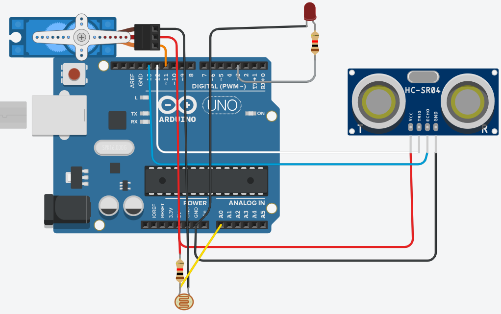
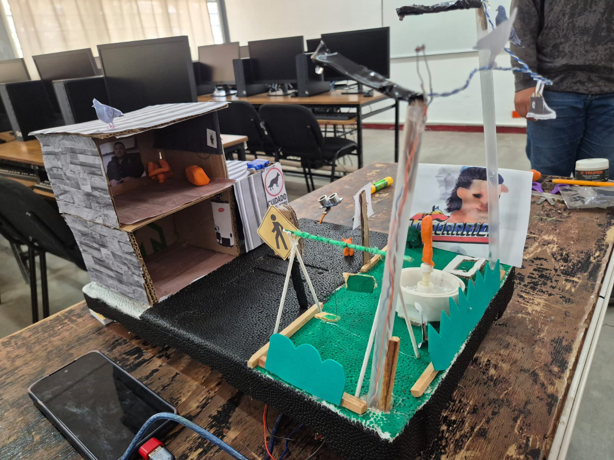
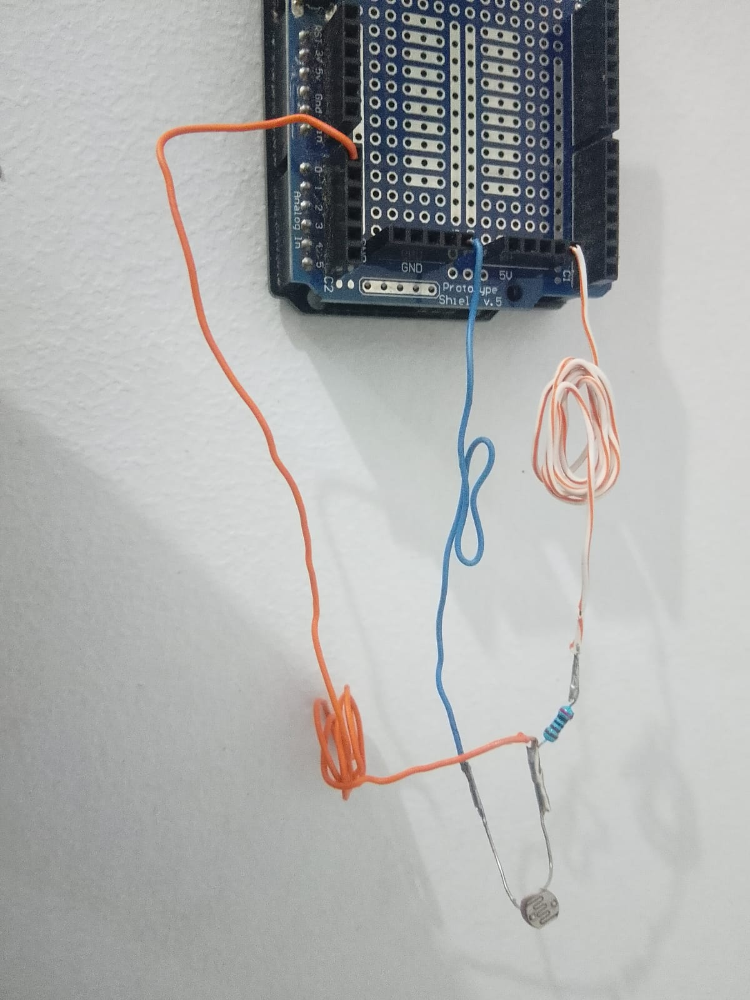
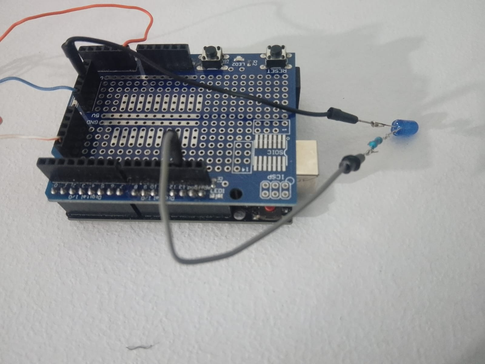
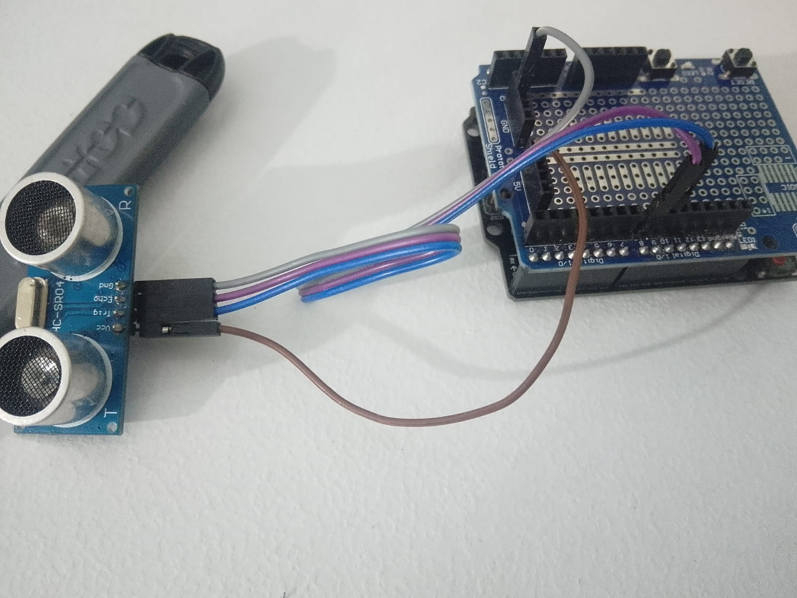
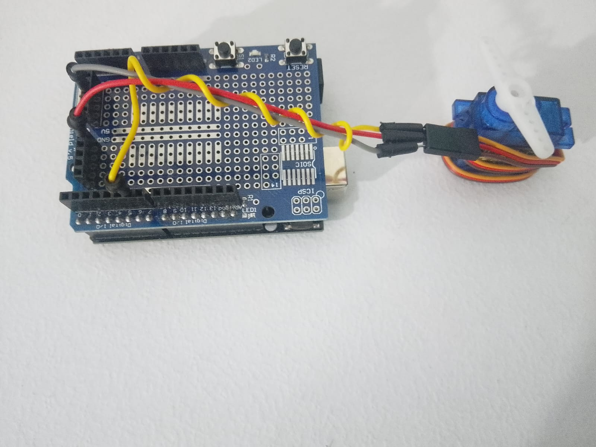
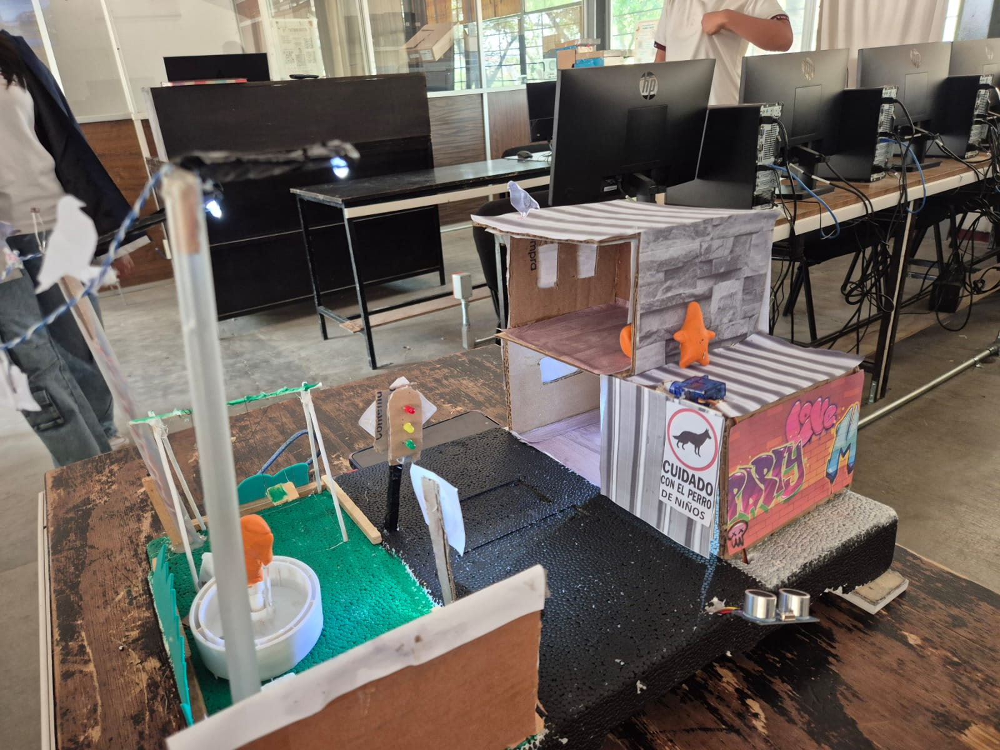

Sistema Inteligente con Arduino
Este proyecto consiste en una maqueta inteligente que combina múltiples sensores y actuadores para crear un sistema automatizado. La maqueta incluye iluminación automática mediante fotorresistencia y un sistema de apertura de puerta controlado por sensor ultrasónico.

Construye la estructura básica de tu maqueta utilizando cartón, madera o el material de tu preferencia. Diseña un espacio donde colocar el LED (puede ser una habitación) y una puerta que pueda moverse con el servomotor. Deja espacio para el sensor ultrasónico en la entrada.

Conecta un extremo de la fotorresistencia a 5V del Arduino. El otro extremo conéctalo al pin analógico A0 y también a través de una resistencia de 10kΩ a GND. Este circuito divisor de voltaje permitirá al Arduino leer los cambios de luz.

Conecta el ánodo del LED (pata larga) al pin digital 13 del Arduino a través de una resistencia de 220Ω. El cátodo (pata corta) conéctalo a GND. Este LED se encenderá automáticamente cuando la fotorresistencia detecte oscuridad.

El sensor HC-SR04 tiene 4 pines: VCC a 5V, GND a GND, TRIG al pin digital 9 y ECHO al pin digital 10 del Arduino. Este sensor emite ondas ultrasónicas y mide el tiempo que tardan en regresar para calcular la distancia a un objeto.

El servomotor tiene 3 cables: café o negro (GND) a GND, rojo (VCC) a 5V, y naranja o amarillo (señal) al pin digital 6 del Arduino. El servo controla la apertura de la puerta mediante rotación controlada de 0° a 180°.

Coloca la fotorresistencia y el LED en la parte superior o lateral de la habitación de tu maqueta. Monta el sensor ultrasónico en la entrada de la puerta apuntando hacia afuera. Fija el servomotor de manera que pueda abrir y cerrar la puerta.

Abre el IDE de Arduino y comienza tu código. Incluye la librería Servo, define los pines y crea las variables necesarias para almacenar lecturas de sensores. En el setup() configura los pines de entrada y salida.
En el loop() lee constantemente el valor de la fotorresistencia para controlar el LED, y la distancia del sensor ultrasónico para controlar el servo. Si hay oscuridad, enciende el LED. Si detecta un objeto cerca, abre la puerta.
Crea una función auxiliar que calcule la distancia usando el sensor ultrasónico. Esta función envía un pulso ultrasónico y mide el tiempo que tarda en regresar el eco, luego calcula la distancia en centímetros.
Conecta tu Arduino a la computadora mediante el cable USB, selecciona el puerto correcto en el IDE y carga el código. Una vez cargado, desconecta el USB y alimenta el Arduino con una batería o adaptador. Prueba tapando la fotorresistencia con tu mano (LED debe encenderse) y acercando tu mano al sensor ultrasónico (puerta debe abrirse).